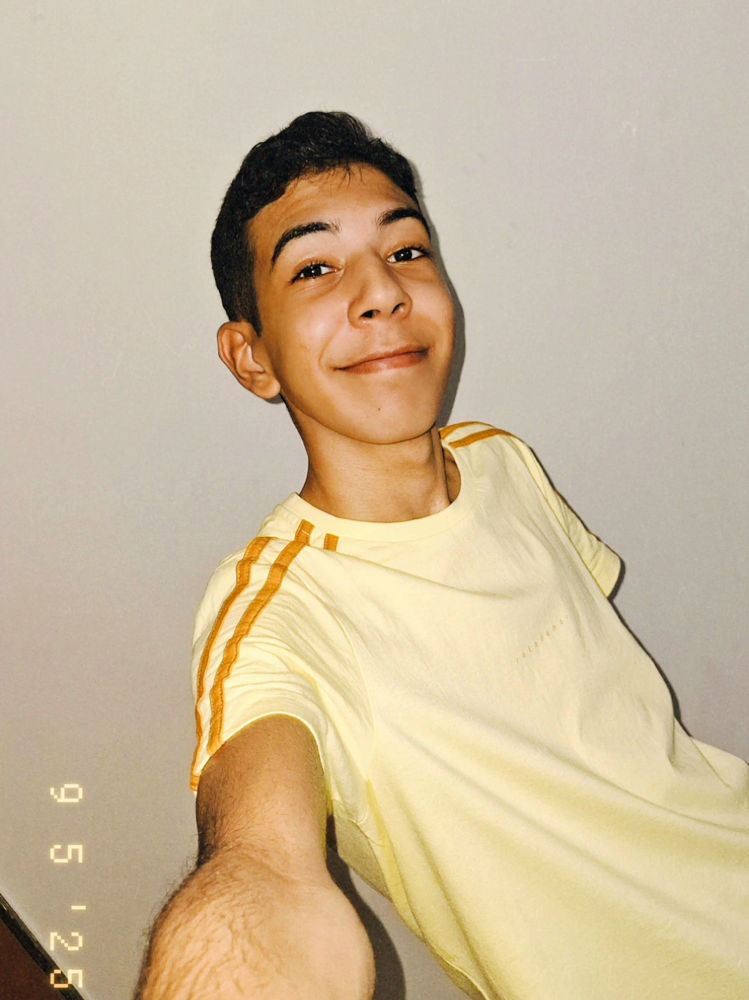

↓↓
A construção do projeto aconteceu em um período de 1 mês, entre o final de maio e o final de junho, e contou com 20 dias totais de desenvolvimento.
O projeto do site Moount serviu como uma atividade prática para meu aprendizado (MarlonSiq), que estou aprendendo HTML e CSS (estruturas para criação de sites).
E todo o site, do jeito que está hoje, foi surgindo ao longo dos dias de criação. Ou seja, não teve um longo planejamento (ou criação de um protótipo, wireframe etc.), o que exige um cuidado a mais para manter uma identidade entre as páginas.
O motivo do Mount ter sido escolhido como tema dessa atividade prática é o fato dele já ter um site. Então, juntou-se o útil ao agradável e fiz uma repaginada na ideia: o que seria necessário ter em um site de um streamer? Assim, o site deveria ter mais informações sobre Gabriel Montresor, os Narcolegas e um ambiente mais acolhedor para a comunidade (até para quem estiver chegando e quiser saber mais sobre).
A ideia inicial do site era um layout bem mais complexo, todo dividido em grid (assim como o site está, porém, inicialmente, era mais complicado). Ainda mais por estar no início dos estudos de CSS, preferi simplificar a ideia para atender aos conhecimentos do momento. E, no decorrer dos dias de construção do site, com videoaulas no YouTube (Curso de CSS Completo, do canal Programação Web), os layouts que antes eram complicados foram sendo adicionados (como o layout de visão geral dos canais do YouTube).
Durante toda a construção do site, a organização do projeto foi feita no Notion, com um sistema para registrar o que foi feito e quanto tempo direto (na IDE - Ambiente de Desenvolvimento Integrado) foi investido naquele dia. Além disso, havia outras páginas para anotar To-dos, textos de informações que seriam adicionados, uma página com todos os canais do Mount, entre outras.
Além de que todo esse processo foi feito no meu tablet S6 Lite (2020), por conta que o notebook que tenho aqui (da minha irmã) não ficava disponível para mim o tempo todo. E como em alguns dias ficar por várias horas seguidas, preferi fazer todo o processo no tablet mesmo. A parte mais chata, por fazer em um tablet, era na criação da paleta de cores, todo momento que eu precisasse mudar um pouco a cor, era uma complicação.
Mas claro, depois que terminei no dia 26/07, com o notebook criei o repositório no GitHub para conseguir fazer esse site ficar dispinível na web.
E assim, hoje, 26 de julho de 2025, marca o 20º e último dia de construção. E, pra falar a verdade, tô bemmm ansioso para ver o resultado final e para não passar do prazo (já são 22:57, e tenho até 00:00).
Assim, o projeto é finalizado com 52 horas e 7 minutos de desenvolvimento (3127 minutos). Veja abaixo uma imagem do planejamento no Notion:
Durante esses 20 dias, o ChatGPT teve uma grande participação. Porém, eu usei ele principalmente como uma ferramenta de estudo. Qualquer dúvida sobre HTML ou CSS, eu tirava com ele (além de também pesquisar em sites normais do Google ou no YouTube).
Porém, também existem algumas exceções. Em algumas partes, eu queria muito colocar um elemento, mas não sabia como fazer. Então, nesses casos, o ChatGPT foi o responsável por gerar esses códigos, que, na maioria (quase total), são códigos em JavaScript (que eu ainda não sei nada :/ ).
Assim, o ChatGPT gerou:
O sistema JS de abrir o menu flutuante "sidebar" de conteúdo;
Sistema do menu flutuante de voltar;
JS para mudar o texto escrito no footer "Criado por (...)";
Efeito de animação dos ícones flutuantes do banner principal na index;
Efeito de escrita no banner nas páginas de perfil dos Narcolegas e Sobre Mim (Mount);
Correção de erros de português.
Antes de terminar, também preciso contar sobre novidades que podem ser adicionadas aqui no site! veja na página de Features
Enfim, esse ai em cima sou euu, tenho que ir embora pq já passei do prazo, já são 00:57. E declaro que oficialmente finalizei este projeto pessoal. Amei adicionar cada detalhe aqui neste site, e quero fazer outros para aprender cada vez mais... tchau! ~MSiq.